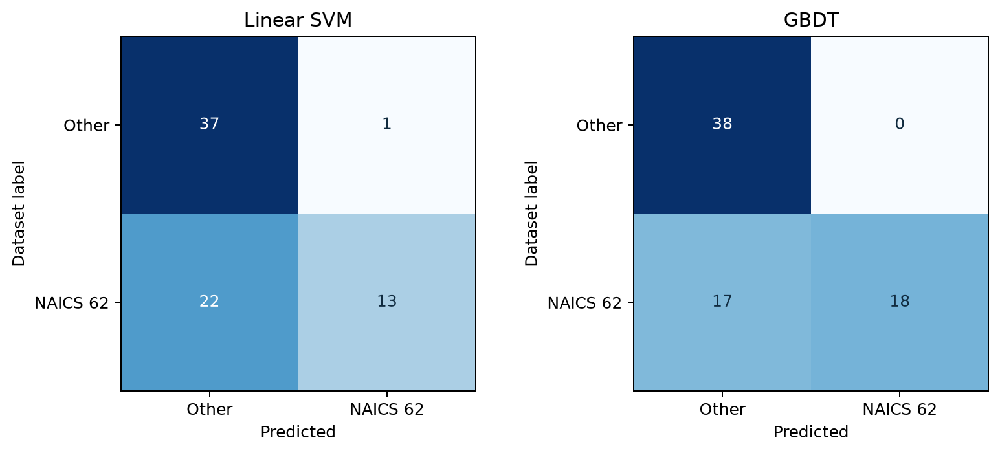

Jobs_2026 healthcare study
A locally executed adaptation for healthcare data analysts
The user selected healthcare data analysts in NAICS 62 and explicitly authorized local computation instead of the course’s assigned EC2 environment. Results below were generated from the local Jobs_2026 snapshot on October 3, 2026.
The pipeline read 2,350,355 rows in 97 posting partitions and selected January–September 2026 observations. All input files have recorded SHA-256 hashes. No posting ID appeared twice in this input snapshot.
| Filter stage | Remaining postings |
|---|---|
| All source rows | 2,350,355 |
| Dated January–September 2026 | 2,217,149 |
| Parsed country explicitly US | 800,461 |
| Valid sector code available | 358,455 |
| Not explicitly marked as staffing | 353,328 |
| Employer name and normalized title available | 353,327 |
Unknown country and unknown sector are exclusions, not negative industry labels. Staffing status that is missing is retained. The geographic and sector filters remove much of the source data, so the retained sample is not representative of all Jobs_2026 records or all US hiring.
Employer sample and split
There are 24,252 employer-name groups before employer-level filters. Of these, 22,470 have fewer than 20 eligible postings. A further 1,420 lack a sector covering at least 80% of their postings. The model therefore uses 362 employers, below the paper’s 10,000-employer target; 85 have exactly consistent sector labels.
| Partition | Employers | NAICS 62 | Other |
|---|---|---|---|
| train | 253 | 120 | 133 |
| validation | 36 | 17 | 19 |
| test | 73 | 35 | 38 |
The split uses seed 2017 and stratification, with zero shared employer-name keys across partitions. It is 70/10/20 up to integer rounding. Exact company-name case and whitespace normalization is used; aliases and subsidiaries may still appear as separate entities. This is weaker than the paper’s proprietary entity normalization.
Model results on the held-out employers
| Model | Precision for NAICS 62 | Recall | F1 | Accuracy |
|---|---|---|---|---|
| Linear SVM | 0.929 | 0.371 | 0.531 | 0.685 |
| GBDT | 1.000 | 0.514 | 0.679 | 0.767 |
| Majority negative | 0.000 | 0.000 | 0.000 | 0.521 |
| All positive | 0.479 | 1.000 | 0.648 | 0.479 |

These metrics measure agreement with dataset-derived sector labels, not independently verified employer truth. The GBDT misses 17 of the 35 healthcare employers while predicting no false positives among 38 other employers in this holdout. That small sample cannot establish perfect precision in deployment. The all-positive baseline has F1 0.648, close to GBDT’s 0.679; ranking models on F1 alone would conceal their very different precision and recall.
For a career product, predicted healthcare labels could narrow an employer-review queue, but the missed healthcare employers would make automatic exclusion costly. Retain existing labels and review disagreements before changing the career sample. No manually adjudicated undefined-employer labels are available, so the paper’s utility scores cannot be reproduced here.
Training and feature details
Vocabulary thresholds are learned from the training employers only. The selected vocabulary contains 421 title candidates and 12 name words. After the 1% within-employer filter, the fitted matrix has 244 observed columns; candidates absent from all training feature vectors are dropped.
The linear SVM tests C = 0.1, 1 and 10 with balanced class penalties. GBDT tests depths 2 and 3 with 100 estimators and learning rate 0.1. Each model is chosen by validation F1, then evaluated on the test partition without refitting. Exact configurations, validation scores, versions and full classification reports are in run.json.
Differences from the paper
This is an exploratory adaptation: a 2026 dataset, one industry, US-only observations, scikit-learn LinearSVC and GBDT, validation-based tuning instead of the paper’s reported cross-validation, and normalized employer-name unigrams without all raw name variants. Name-word frequency counts employers containing the word. The 80% dominant-sector rule is an explicit adaptation for inconsistent posting-level labels. A preliminary unrestricted-year, exact-consistency run exposed data-quality problems; its results are superseded. The final study is not a preregistered confirmatory replication.
Industry fields may themselves derive from title or employer heuristics. Their provenance has not been independently audited. Label circularity, unresolved aliases, cohort selection and noisy titles limit the meaning of predictive agreement. A temporal holdout and independent label review remain future validation work.